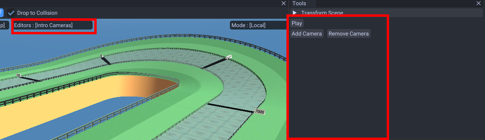
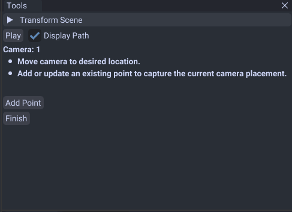

Intro Cameras
This is the opening animation when the game loads the map.
Editing
You can switch to the intro camera editor under the editor list.

Then in the tools window click Add Canera

Simply move the camera to your desired spot then add/update/remove points.
Once you add 3 cameras then it is finished! The tool will configure the camera settings automatically.